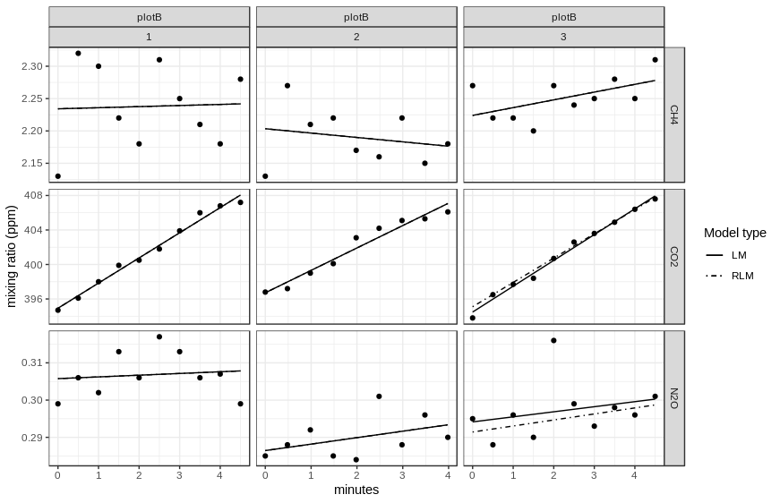

Gas Fluxes and Dynamic Chamber MeasuRements
Overview
The glimmr package provides functions to convert high frequency concentration data obtained by (dynamic-) chamber measurements into gasfluxes. Data recorded with different devices can be processed automatically. The data is separated into chunks covering the single chamber applications and containing additional meta information (e.g. IDs, temperature…) provided by a metadata file.
Furthermore glimmr contains functions to calculate gasfluxes with the ‘Boundary Layer Equation’ (BLE).
To calculate gasfluxes from high frequency chamber measurements, glimmr offers a cusomizable system of gas analyzer definitions (analyzer()), as well as two preconfigured devices with read_, process_ and inspect_ functions:
-
process_chamber()&inspect_chamber(): custom devices -
read_gasmet(),process_gasmet()&inspect_gasmet(): GASMET -
read_losgatos(),process_losgatos()&inspect_losgatos(): LosGatos
Getting started
Calculate fluxes from device records and a meta file containing information about single measurements. Fluxes are reported in [mmol/m²/d] using linear model fitting and robust linear model fitting with robust::lmRob()
# read data
gasmet <- read_gasmet("path/to/gasmet_file.txt")
meta_gasmet <- read_csv("path/to/meta_file.csv")
# create diagnostic plot(s)
inspect_gasmet(gasmet, meta_gasmet)
# compute fluxes in mmol/m²/d
# F_LM: Liner Model
# F_RLM: Robust Liner Model
process_gasmet(gasmet, meta_gasmet)
#> End of interval determined by number of observations. Count = 10
#> Using temperature from meta file. Column = temp
#> # A tibble: 18 x 9
#> date site begin gas rep F_LM LM_r2
#> <date> <chr> <dttm> <chr> <dbl> <dbl> <dbl>
#> 1 2017-04-12 plotA 2017-04-12 09:01:49 CH4 1 0.0259 0.0119
#> 2 2017-04-12 plotA 2017-04-12 09:08:56 CH4 2 -0.144 0.360
#> 3 2017-04-12 plotA 2017-04-12 09:14:25 CH4 3 0.0980 0.118
#> 4 2017-04-12 plotB 2017-04-12 16:47:41 CH4 1 0.0151 0.00160
#> 5 2017-04-12 plotB 2017-04-12 16:55:41 CH4 2 -0.0601 0.0449
#> 6 2017-04-12 plotB 2017-04-12 17:02:20 CH4 3 0.107 0.307
#> 7 2017-04-12 plotA 2017-04-12 09:01:49 CO2 1 -7.58 0.533
#> 8 2017-04-12 plotA 2017-04-12 09:08:56 CO2 2 1.73 0.0987
#> 9 2017-04-12 plotA 2017-04-12 09:14:25 CO2 3 -0.945 0.101
#> 10 2017-04-12 plotB 2017-04-12 16:47:41 CO2 1 25.9 0.987
#> 11 2017-04-12 plotB 2017-04-12 16:55:41 CO2 2 23.1 0.953
#> 12 2017-04-12 plotB 2017-04-12 17:02:20 CO2 3 26.6 0.991
#> 13 2017-04-12 plotA 2017-04-12 09:01:49 N2O 1 -0.0419 0.282
#> 14 2017-04-12 plotA 2017-04-12 09:08:56 N2O 2 0.0262 0.279
#> 15 2017-04-12 plotA 2017-04-12 09:14:25 N2O 3 0.0111 0.153
#> 16 2017-04-12 plotB 2017-04-12 16:47:41 N2O 1 0.00409 0.0134
#> 17 2017-04-12 plotB 2017-04-12 16:55:41 N2O 2 0.0154 0.176
#> 18 2017-04-12 plotB 2017-04-12 17:02:20 N2O 3 0.0121 0.0712
#> # … with 2 more variables: F_RLM <dbl>, RLM_r2 <dbl>Calculate gas transfer coefficient used with the Boundary Layer Equation (BLE).